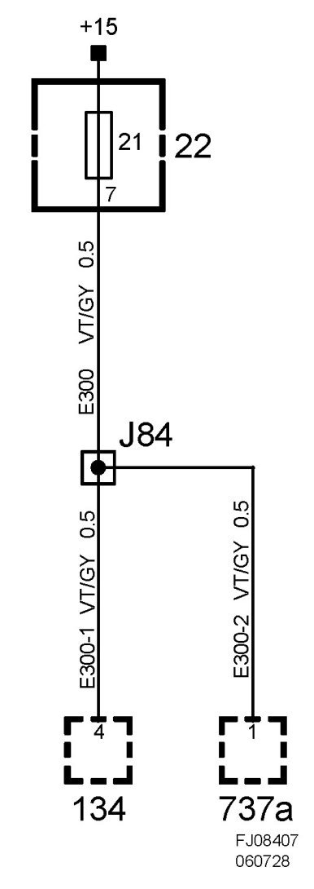
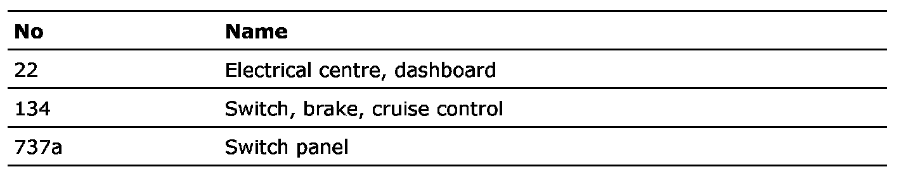

Crimp J84, Dashboard Harness
Crimp J84, Dashboard Harness
Location:
LHD: Approx. 270 mm from branching of light switch unit to column integration module
RHD: Approximately 100 mm from branching of grounding point G43 towards MIU

List of components
